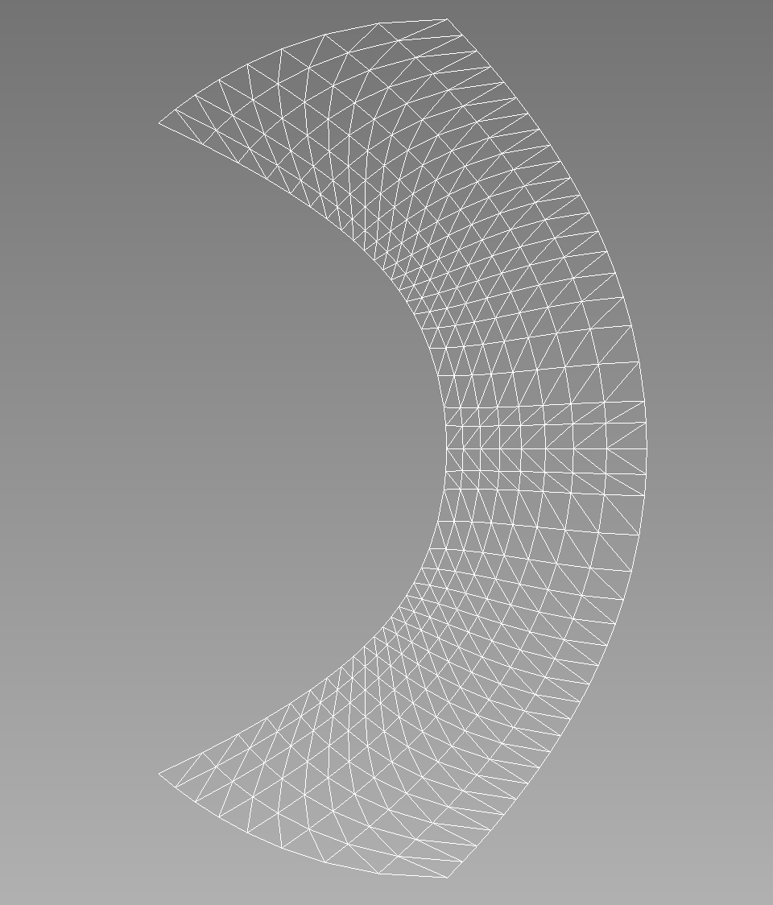

- gammaGamma parameter
C++ Type:double
Description:Gamma parameter
- kmaxValue of k on the inner wall.
C++ Type:double
Description:Value of k on the inner wall.
- kminValue of k on the outer wall.
C++ Type:double
Description:Value of k on the outer wall.
- n_extra_q_ptsHow many 'extra' points should be inserted in the final element *in addition to* the equispaced q points.
C++ Type:int
Description:How many 'extra' points should be inserted in the final element *in addition to* the equispaced q points.
- num_k_ptsHow many points in the range k=(kmin, kmax).
C++ Type:int
Description:How many points in the range k=(kmin, kmax).
- num_q_ptsHow many points to discretize the range q = (0.5, k) into.
C++ Type:int
Description:How many points to discretize the range q = (0.5, k) into.
RinglebMesh
Overview
This mesh can be applied to a Ringleb problem. This problem tests the spatial accuracy of high-order methods. The flow is transonic and smooth. The geometry is also smooth, and high-order curved boundary representation appears to be critical.
Governing Equations
The governing equations are the 2D Euler equations with .
Geometry
Let be a streamline parameter, i.e., on each streamline. The two stream lines for the two wall boundaries are for the inner wall, and for the outer wall. Let be the velocity magnitude. For each fixed , , the variable varies between and . For each , define the speed of sound , density , pressure , and a quantity denoted by by:
For each pair , set:
Mesh Overlook
For example, let's consider the following input file:
[Mesh]
type = RinglebMesh
kmin = 0.7
num_k_pts = 9
num_q_pts = 20
kmax = 1.2
n_extra_q_pts = 2
gamma = 1.4
triangles = true
[]
The corresponding mesh looks like this:

Further RinglebMesh Documentation
Input Parameters
- allow_renumberingTrueIf allow_renumbering=false, node and element numbers are kept fixed until deletion
Default:True
C++ Type:bool
Description:If allow_renumbering=false, node and element numbers are kept fixed until deletion
- build_all_side_lowerd_meshFalseTrue to build the lower-dimensional mesh for all sides.
Default:False
C++ Type:bool
Description:True to build the lower-dimensional mesh for all sides.
- ghosting_patch_sizeThe number of nearest neighbors considered for ghosting purposes when 'iteration' patch update strategy is used. Default is 5 * patch_size.
C++ Type:unsigned int
Description:The number of nearest neighbors considered for ghosting purposes when 'iteration' patch update strategy is used. Default is 5 * patch_size.
- inflow_bid1The boundary id to use for the inflow
Default:1
C++ Type:short
Description:The boundary id to use for the inflow
- inner_wall_bid2The boundary id to use for the inner wall
Default:2
C++ Type:short
Description:The boundary id to use for the inner wall
- max_leaf_size10The maximum number of points in each leaf of the KDTree used in the nearest neighbor search. As the leaf size becomes larger,KDTree construction becomes faster but the nearest neighbor searchbecomes slower.
Default:10
C++ Type:unsigned int
Description:The maximum number of points in each leaf of the KDTree used in the nearest neighbor search. As the leaf size becomes larger,KDTree construction becomes faster but the nearest neighbor searchbecomes slower.
- outer_wall_bid4The boundary id to use for the outer wall
Default:4
C++ Type:short
Description:The boundary id to use for the outer wall
- outflow_bid3The boundary id to use for the outflow
Default:3
C++ Type:short
Description:The boundary id to use for the outflow
- parallel_typeDEFAULTDEFAULT: Use libMesh::ReplicatedMesh unless --distributed-mesh is specified on the command line REPLICATED: Always use libMesh::ReplicatedMesh DISTRIBUTED: Always use libMesh::DistributedMesh
Default:DEFAULT
C++ Type:MooseEnum
Description:DEFAULT: Use libMesh::ReplicatedMesh unless --distributed-mesh is specified on the command line REPLICATED: Always use libMesh::ReplicatedMesh DISTRIBUTED: Always use libMesh::DistributedMesh
- skip_refine_when_use_splitTrueTrue to skip uniform refinements when using a pre-split mesh.
Default:True
C++ Type:bool
Description:True to skip uniform refinements when using a pre-split mesh.
- trianglesFalseIf true, all the quadrilateral elements will be split into triangles
Default:False
C++ Type:bool
Description:If true, all the quadrilateral elements will be split into triangles
Optional Parameters
- centroid_partitioner_directionSpecifies the sort direction if using the centroid partitioner. Available options: x, y, z, radial
C++ Type:MooseEnum
Description:Specifies the sort direction if using the centroid partitioner. Available options: x, y, z, radial
- partitionerdefaultSpecifies a mesh partitioner to use when splitting the mesh for a parallel computation.
Default:default
C++ Type:MooseEnum
Description:Specifies a mesh partitioner to use when splitting the mesh for a parallel computation.
Partitioning Parameters
- construct_node_list_from_side_listTrueWhether or not to generate nodesets from the sidesets (usually a good idea).
Default:True
C++ Type:bool
Description:Whether or not to generate nodesets from the sidesets (usually a good idea).
- control_tagsAdds user-defined labels for accessing object parameters via control logic.
C++ Type:std::vector<std::string>
Description:Adds user-defined labels for accessing object parameters via control logic.
- dim1This is only required for certain mesh formats where the dimension of the mesh cannot be autodetected. In particular you must supply this for GMSH meshes. Note: This is completely ignored for ExodusII meshes!
Default:1
C++ Type:MooseEnum
Description:This is only required for certain mesh formats where the dimension of the mesh cannot be autodetected. In particular you must supply this for GMSH meshes. Note: This is completely ignored for ExodusII meshes!
- enableTrueSet the enabled status of the MooseObject.
Default:True
C++ Type:bool
Description:Set the enabled status of the MooseObject.
- nemesisFalseIf nemesis=true and file=foo.e, actually reads foo.e.N.0, foo.e.N.1, ... foo.e.N.N-1, where N = # CPUs, with NemesisIO.
Default:False
C++ Type:bool
Description:If nemesis=true and file=foo.e, actually reads foo.e.N.0, foo.e.N.1, ... foo.e.N.N-1, where N = # CPUs, with NemesisIO.
- patch_size40The number of nodes to consider in the NearestNode neighborhood.
Default:40
C++ Type:unsigned int
Description:The number of nodes to consider in the NearestNode neighborhood.
- patch_update_strategyneverHow often to update the geometric search 'patch'. The default is to never update it (which is the most efficient but could be a problem with lots of relative motion). 'always' will update the patch for all secondary nodes at the beginning of every timestep which might be time consuming. 'auto' will attempt to determine at the start of which timesteps the patch for all secondary nodes needs to be updated automatically.'iteration' updates the patch at every nonlinear iteration for a subset of secondary nodes for which penetration is not detected. If there can be substantial relative motion between the primary and secondary surfaces during the nonlinear iterations within a timestep, it is advisable to use 'iteration' option to ensure accurate contact detection.
Default:never
C++ Type:MooseEnum
Description:How often to update the geometric search 'patch'. The default is to never update it (which is the most efficient but could be a problem with lots of relative motion). 'always' will update the patch for all secondary nodes at the beginning of every timestep which might be time consuming. 'auto' will attempt to determine at the start of which timesteps the patch for all secondary nodes needs to be updated automatically.'iteration' updates the patch at every nonlinear iteration for a subset of secondary nodes for which penetration is not detected. If there can be substantial relative motion between the primary and secondary surfaces during the nonlinear iterations within a timestep, it is advisable to use 'iteration' option to ensure accurate contact detection.